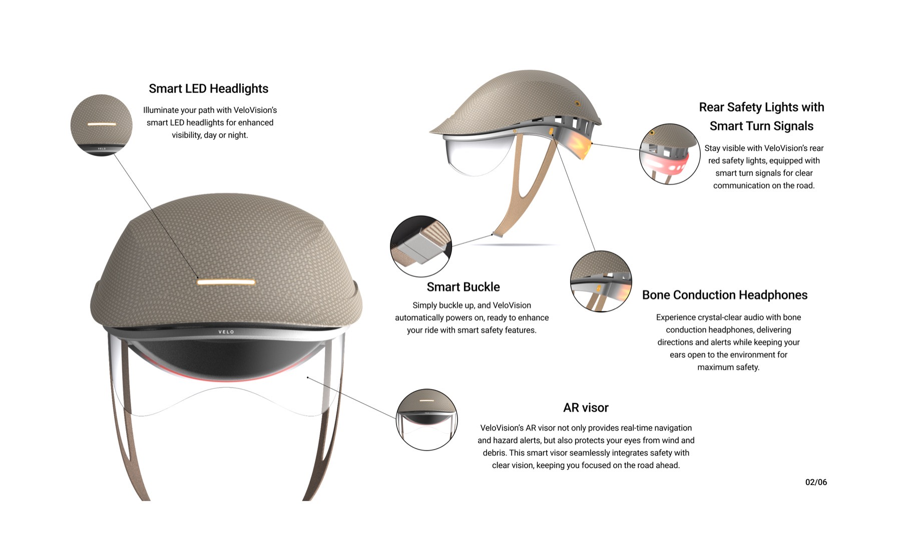
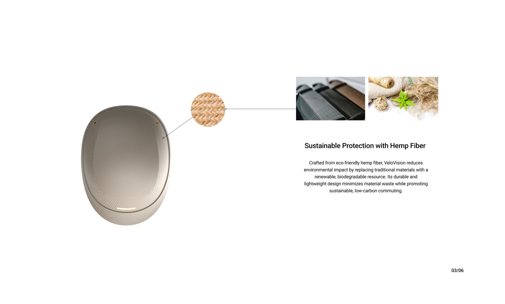
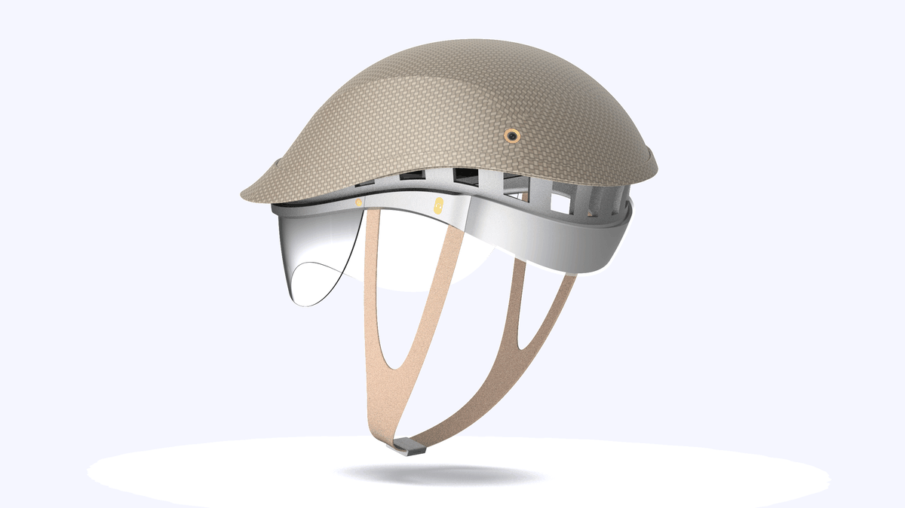
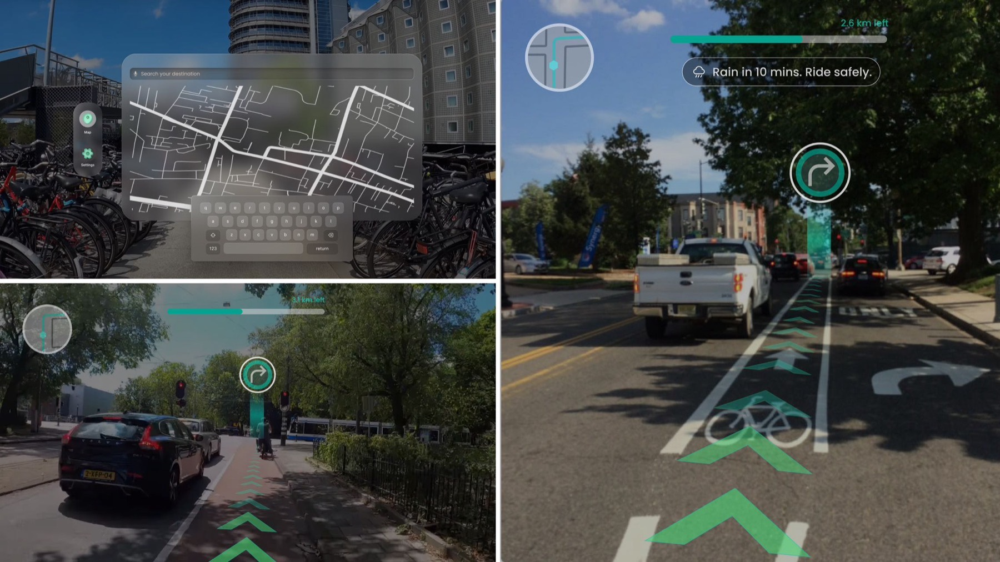
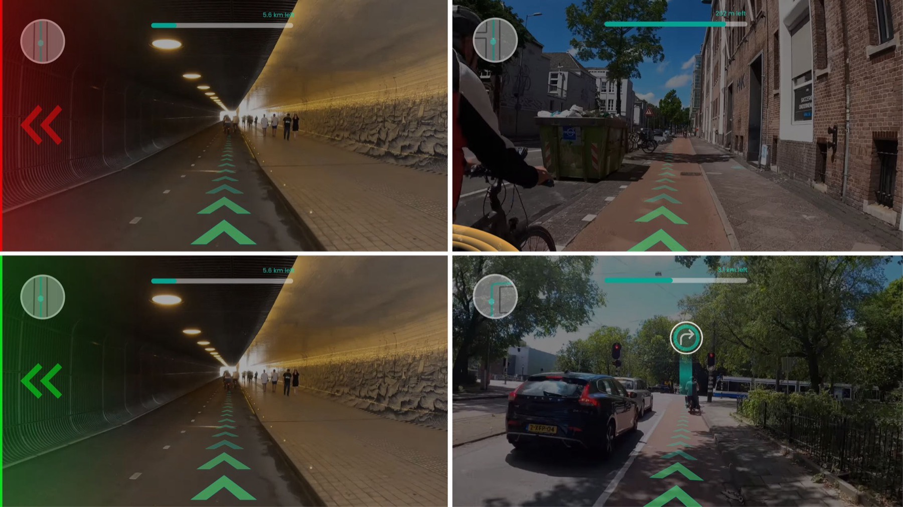
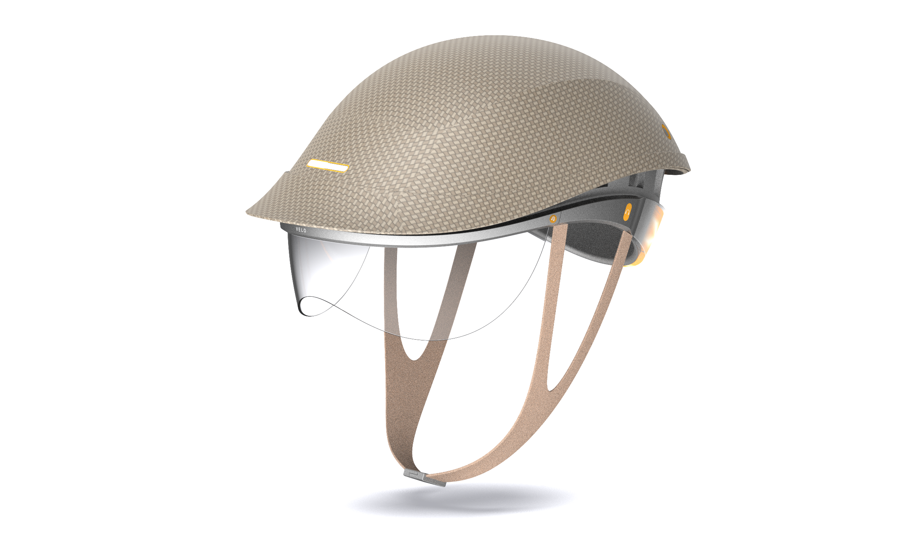
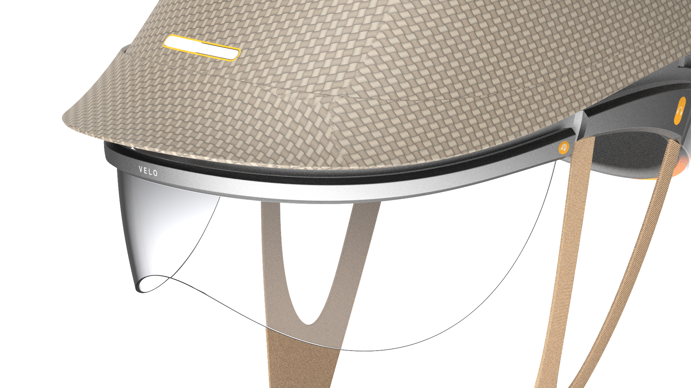

A smart safety helmet that combines protective headgear with AR smart glasses, gesture-controlled turn signals and bone-conduction audio, letting cyclists navigate safely without checking their phones.







VeloVision is a smart safety helmet designed to enhance cyclist safety and convenience. It combines protective headgear with smart glasses that display real-time navigation and notifications, letting riders focus on the road without checking their phones. With bone conduction headphones, VeloVision ensures clear audio for directions and alerts while keeping ears free for environmental awareness. It reduces distractions, offers collision warnings, and provides a seamless gesture-controlled experience.
With over 41,000 cyclist deaths globally each year, VeloVision addresses the urgent need for safer cycling by reducing distractions and enhancing awareness. Cyclists often represent 5-10% of road fatalities, but VeloVision aims to lower these numbers by delivering real-time alerts for weather, hazards, and traffic only when crucial.
The helmet's lightweight HEMP fiber shell and mycelium-based impact absorption offer superior comfort and protection, combining innovation with sustainability.
Its non-intrusive smart glasses ensure riders stay informed without diverting attention from the road. Bright LED headlights enhance signal visibility, while magnetic AR glasses provide real-time navigation and hazard alerts. Hands-free gesture control enables easy signaling, with color-coded indicators for traffic. Orange highlights pop from the black CMF, marking key functions and injecting energy into the design.
The AR navigation system integrates with real-life conditions, overlaying routes, turns, and road info naturally into your view. Radar and sensors detect approaching vehicles, with yellow warnings alerting to hazards. For hands-free signaling, use a thumb gesture to activate the turn signal — a red arrow warns of nearby vehicles, a green arrow shows when it's safe to merge.